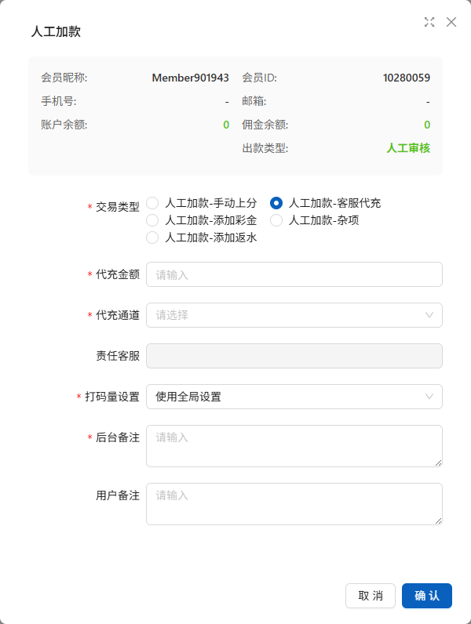
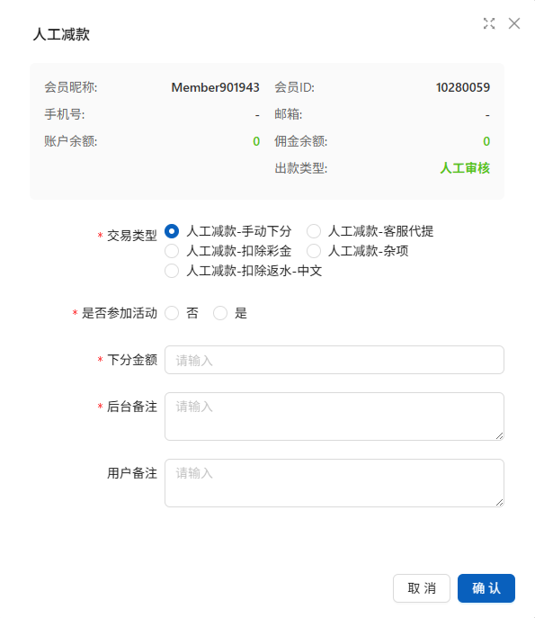
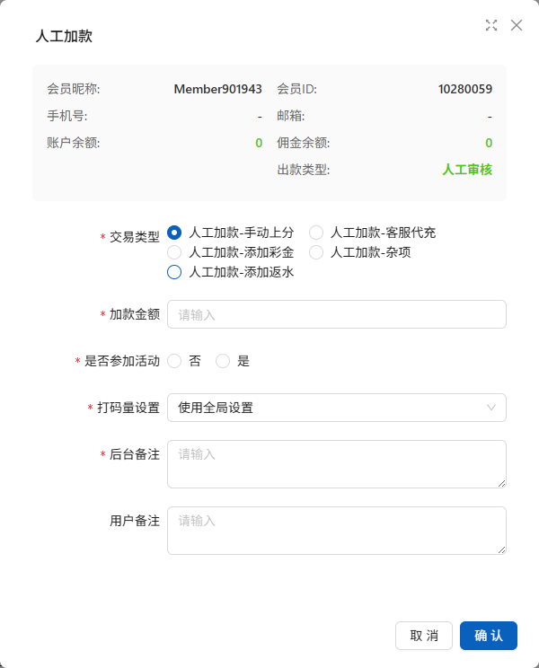
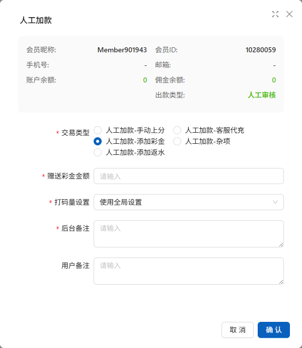
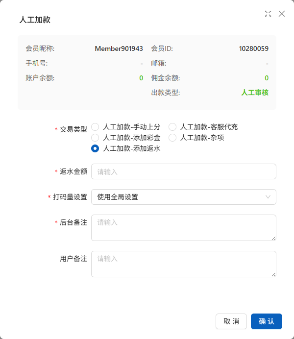
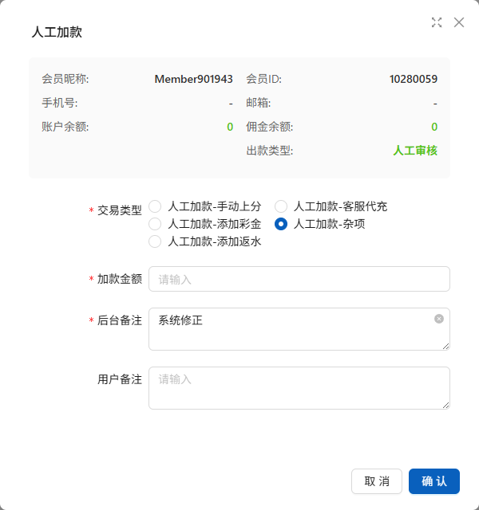
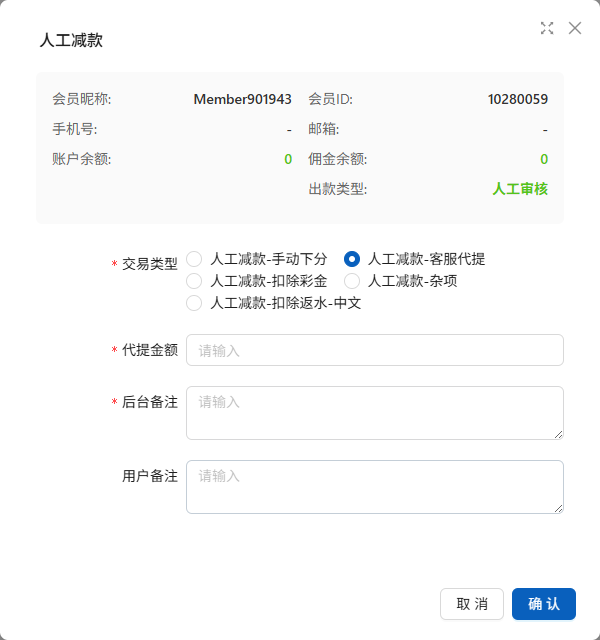
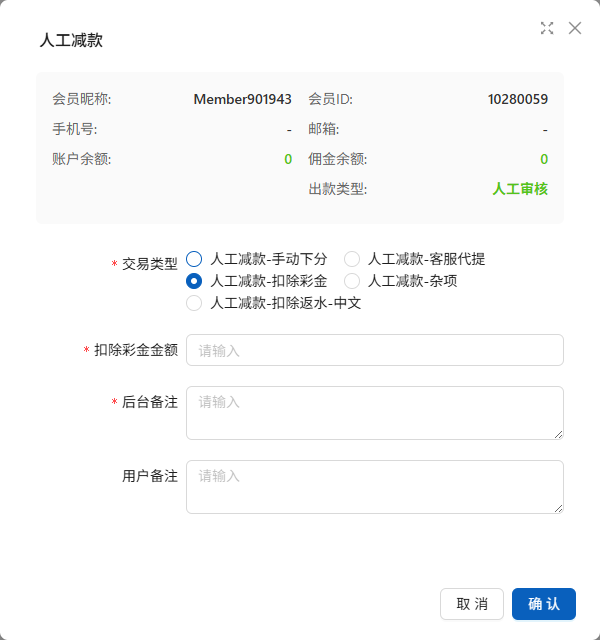
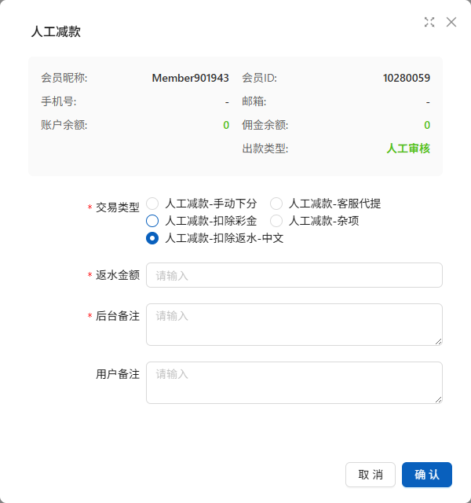

人工收扣款稽核限制
后台通过手动操作进行“人工加款”中上分类操作可以设置打码量要求
针对手动操作进行“人工减款”中 下分类操作则没有可以调整打码量的设置
该问题会导致用户在被手动减款后打码量仍然为原始打码量
当用户被扣款后余额小于平台统一稽核标准时，用户将无法进行提现等操作，严重影响用户对于平台的信任度
1. 添加下分的手动操作设置打码量的要求
2. 解除下分后用户余额小于稽核标准时，将解除该用户提款的稽核限制
1. 管理后台→财务管理→资产手动操作
2. 人工加款→人工加款-杂项
3. 人工减款→人工减款-手动下分/客服代理/扣除彩金/扣除返水-中文/杂项









人工加款-杂项
在加款金额输入栏下添加“打码量设置”下拉框和“打码量倍数”输入框
人工减款-手动下分/客服代提/扣除彩金/扣除返水-中文/杂项
在以上五个人工减款类型中设置金额如疏狂下方添加“打码量设置”下拉框和“打码量数量”输入框
稽核标准失效
当为用户进行手动下分后，判断该用户下分后余额是否满足平台的稽核标准